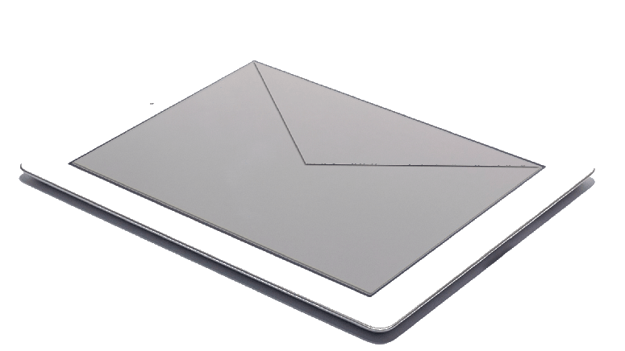

Sin duda, ideal para todo tipo de asociaciones, industrias, cooperativas, partidos políticos, colegios profesionales, comunidades de vecinos, gobiernos locales, sindicatos, educación, corporaciones, etc.
El sistema prevé que la votación sea validada por los miembros de un Comité de Validación que podrán verificar las características de la misma: idiomas, métodos de validación, censo, auditores, interventores e incluso simular la votación. Posibilidad por parte de los interventores de anular votos electrónicos realizados